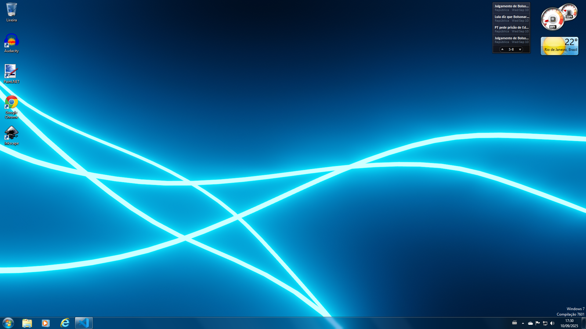
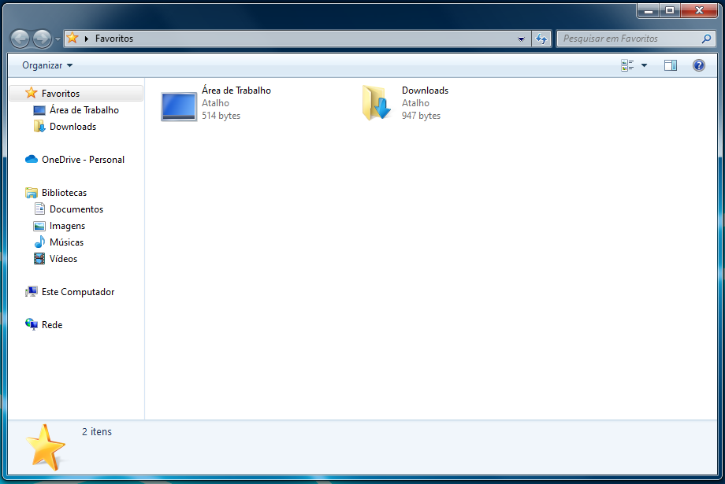
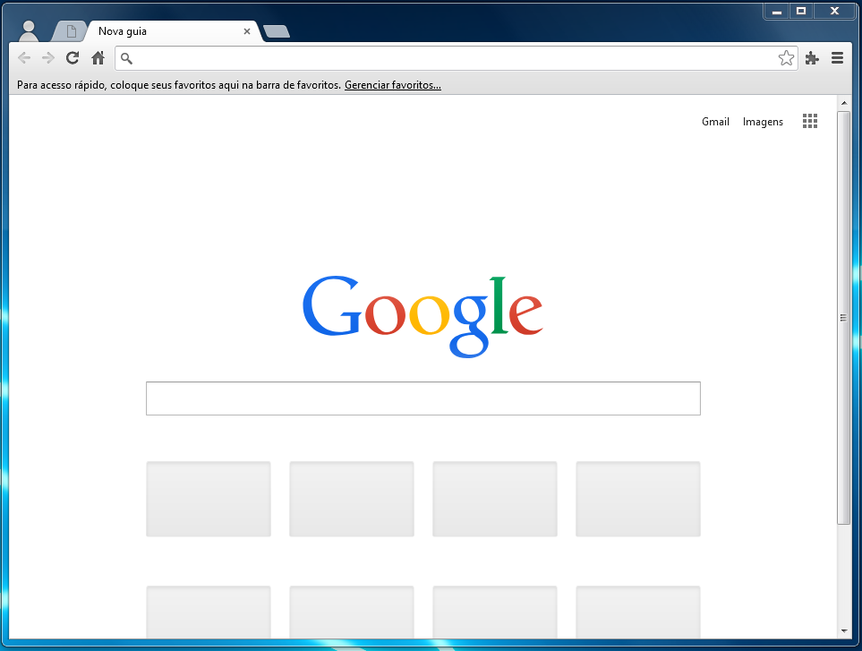

Screenshots
• Here are some screenshots I made up for this website, currently:
Desktop

Screenshot of my Main PC (Windows 10) transformed into Windows 7.
Reminding that the wallpaper was pre-rendered by myself on Blender.

Screenshot of the File Explorer (Not from Windows 7).
This was achieved using some mods taken from Windhawk.
Applications

Screenshot of the old Chrome from 2014
NOT the real Google Chrome, this was achieved using a Firefox fork.